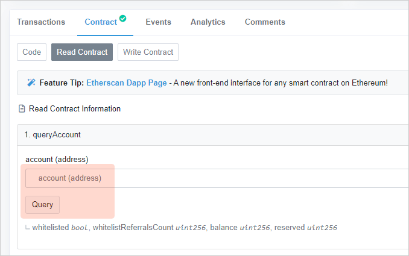
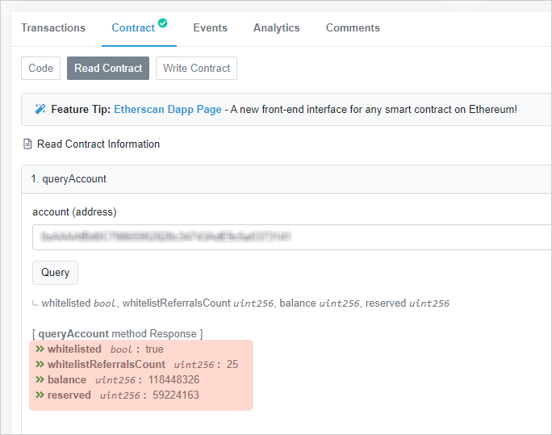

怎么查询Stoken数据¶


合约地址是**0x460cbb9409a024a55f2b7b7f69afd0da385ce850**
发布在`Tx Hash 0xd88541481a39c1…`_
区块号`#8623851`_
开源在协议`GNU General Public License v3.0`_下
合约地址:
https://etherscan.io/address/0x460cbb9409a024a55f2b7b7f69afd0da385ce850#readContract
点击 这里, 查看合约
Stoken统计数据¶
方法 #2: stoken2

Note
- totalSupply
Stoken的总量，保留六位小数
1000000000代表一共有 1,000,000,000.000 Stoken。- whitelistCounter
whitelisted addresses的数量, 无小数
6918代表一共有 6,918 个地址已经录入白名单。- whitelistingMode
白名单注册是否打开
True代表 打开, andFalsefor 关闭.当返回``True``时，你可以参照 如何加入白名单 去参加.
- safeMode
安全模式 是否打开
True代表 打开, andFalsefor 关闭当返回
True, 非白名单上的地址禁止交易Stoken- burningMode
销毁模式 是否打开
True代表 打开, andFalsefor 关闭当返回
True, Stoken每次交易会销毁**1%**。- burningPermill
当 销毁模式 打开, 这个值才有效 这代表每次交易销毁率
返回
10代表每次销毁**1%**.
在Stoken中查询某地址¶
方法 #1: queryAccount
{kind=link}
输入以太坊地址，点击 **Query**按钮, then:
{kind=link}
让我们关注返回值:
whitelisted bool : true
whitelistReferralsCount uint256 : 25
balance uint256 : 118448326
reserved uint256 : 59224163
Note
- whitelisted
如果返回值是
true, 代表地址已经在白名单中,false代表没有。- whitelistReferralsCount
直接推荐数。
- balance
Stoken的数量, 保留6位小数
118448326代表 118.448326 Stoken。- reserved
Stoken剩余的数量, 保留6位小数
59224163代表 59.224163 Stoken.